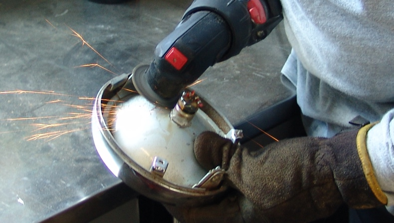

1972 Kawasaki F7A
Purchased March 2017 in Olympia WA.
(4/2/17) The Kawasaki f7 was produced from 1971 through 1975. The models are:
1971 F7 1972 F7A 1973 F7B 1974 F7C 1975 F7D
It was a good enduro motorcycle at its time with higher horsepower for its class than most. With an enclosed carburetor to keep out dirt and water, the air filter opening under the seat, and good ground clearance, it could be driven through water levels that would drown most any other machine in its class.
It had what Kawasaki called a Hatta fork. A unique design of fork utilized by four Kawasaki motorcycles from 1971 through 1975. These forks allowed the rider to customize the rake, spring tension, and fork length to specific riding conditions. The base of the fork tube ended at the axle. The axle was then kept in place by a retaining cap and three fastening bolts. The bottom of each leg of the fork had two positions for the axle. Placing the axle in the auxiliary position forward of the standard position increased the fork offset thus giving the motorcycle better road qualities. By rotating the legs 180° so the auxiliary axle position is behind of the standard axle slot, decreased the rake. This gave the Hatta forks a total of three positions for the axle. That all sounds good but these forks were considered junk by most riders.
The 72 F7A came in one color: Red.
THE PROJECT
Not going to do much to this bike. Plan is to go through mechanical, make it street legal and ride it around a bit until I sell it or trade for another bike.
I found the bike on craigslist, fired it up in the sellers driveway, put it in first, and immediately stalled it out. Despite that I looked the seller in the eye, shook his hand and handed him the cash he wanted to let me take the bike home.
At home, fired the thing up, bike starts on first kick every time. Turned the key to off position - bike keeps purring along. Pull the key out, ring-a-ding-a-ding the little two stroke continues to sing. Like so many of these dual purpose bikes from the seventies it must have been a dirt-only daytime fun bike. Most of the time when I run across a bike like this all lights have been removed and generally lost over time. This one at least had all its lights and even the optional turn signals.
Ah ha! thats why this is here - kill switch.
Who needs a key, push the button to kill engine. Err, only problem is, no key required to stop the thing, well then no key required to start it either. Not exactly an irreplaceable classic, still I don't want the bike to be that easy to steal.
So I dive into the electrical and after a frustrating hour with my trusty voltmeter, I finally decide there has got to be a glitch in the ignition switch. I pull the switch off and - oh no! 5 of the 10 wires have been cut.
I spend another 4 hours trying to read a horribly out of focus wiring diagram, pulled off the net, to map where each disconnected wire needs to be reattached. Got it - I hope. Plug in my soldering iron, yell at my better half to come downstairs where I am set up to solder - on the dining room table. Need her to hold the wires I want to solder in place. I expect a swift kick in the derriere for doing this indoors on the dining room table but she doesn't flinch. Sadly, once I ask her to hold the first wire I want to solder onto its contact point she exclaims that this looks just like cake decorating. "OK" I say, "now just hold this wire in place while I solder it." "Bet I can do that better than you can" she says. I just sigh, I know better than to argue with her. I give her brief instructions and now I am holding wires in place as she melts metal.
Well for a first timer at soldering she done OK, I suppose I can't complain. Well, of course I complained, but after reinstalling the switch and seeing the neutral indicator light up, when I switch the key from off to on, I was pretty damn happy. After a little more main harness rewiring work, to undo kill switch changes, I had power going through the ignition switch. The bike once again requires a key to run.
Having bought the bike on a bill of sale only I applied for a title after having the bike inspected by the Washington State Patrol. Always somewhat worrisome given the bike has probably changed hands many times and one can never know if it were stolen at some point. I don't really worry though as I always insist on a proper bill of sale being filled out and never spend much on a bike that has no title. Worst case if it comes back stolen, I'm out a few hundred bucks. WSP pronounced the bike clean, so now I don't mind putting in some elbow grease and a small amount of money into the bike.
After having secured a collectors registration and plate, only other thing that needs doing is to get the front light working to make it street legal. In WA State you can pay just $50 for registration and don't have to pay tab fees if the vehicle is over 30 years old and is not used for regular transportation, which this one definitely won't be. Like many older cheaper bikes of the sixties and seventies this one has a sealed headlight. Back in the day if the bulb blew one would throw out the entire headlight and buy a new one, or as most did, ride around without lights. Replacement lights are hard to come by and expensive, at least for an original. So out comes my grinder and I cut the old bulb out.
With that done I cement a replacement bulb in place and the bike is once again street legal.